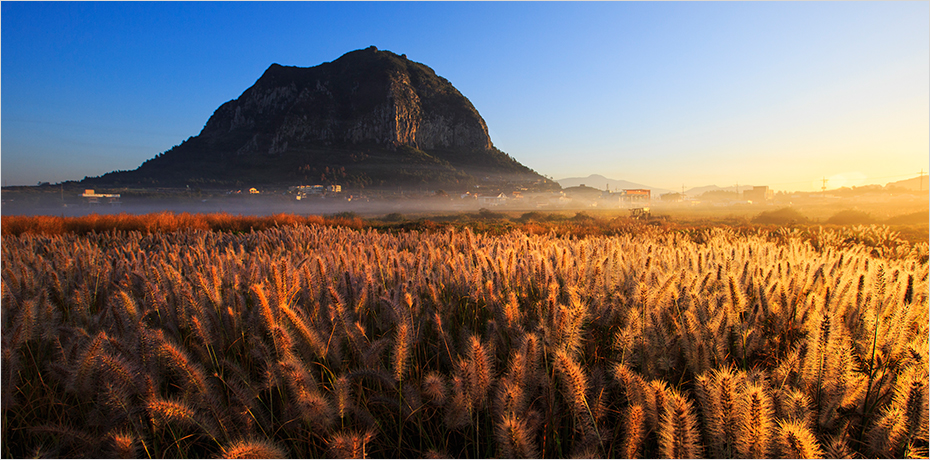

웰니스
- Home
- 투자환경
- 미래 유망산업
- 웰니스

스트레스와 다양한 질병에 쉽게 노출되어 있는 현대인들은 힐링과 건강에 대한 관심이 날로 커지고 있으며, 전세계 웰니스 시장 규모와 밸류도 지속적으로 증가하고 있습니다.
제주는 깨끗한 자연환경과 우수한 관광 인프라를 기반으로, 고품질 의료 서비스, 숲 치유, 뷰티와 안티에이징, 미용과 스파, 힐링과 명상, 피트니스와 레저 등 우수한 시설들을 구축하고 있고, 1차 산업을 기반으로 한 식품 원료 생산과 가공 산업도 발달하였습니다.
대한민국 소비자들의 건강한 라이프 스타일을 주도하고 있는 제주는 아시아 최대의 실버 시장과 헬스케어 시장을 보유한 중국, 일본과도 1시간 거리에 위치하고 있어 웰니스 관광산업 투자의 최적지입니다.
또한 제주는 제주특별자치도 특별법에 따라 외국인이 설립한 법인이 의료기관을 개설할 수 있도록 허용되는 지역이며, JDC가 조성하고 있는 서귀포시에 위치한 헬스케어타운 ‘힐링힐즈’는 세계적인 복합 의료 관광단지를 목표로 투자를 유치하고 있습니다.
스트레스 완화와 질병 치유 그리고 정서적 안정을 제공하는 제주의 웰니스 자원은 건강과 힐링을 찾는 전세계 사람들에게 최고의 경험을 선사합니다.


제주의 부가가치를 제고하는 의료와 휴양 산업

-
치유자원
- 세계자연유산 3관왕
- 섬 전체의 47% 임야
- 평균 최저 13.9 ℃ 최고 19.9 ℃의 온화한 기후
- 생태 탐방로 500 ㎞
- 자연휴양림 1,149 ㏊
- 람사르 습지 2.81 ㎢
- 한라산국립공원
-
관광산업
- 개방형투자병원
- 헬스케어타운리조트
- 연간 관광 수입 5.7조원(2017)
- 연 평균 관광객 1,500만 명
- 대한민국 선호 관광지 1위 (한국관광공사·문화체육관광부 관광 빅데이터 분석 결과(2018))
-
헬스케어·뷰티 산업
- 보건의료시설
- 프리미엄 스파 시설
- 피트니스 시설
- 명상 시설
- 친환경 농수산물 생산기반(건강식품 제조, 유기농 식품 제조, 화장품 제조)
제주의 웰니스 자원

-
1개의 국립공원
153.332 ㎢[홈페이지]https://www.jeju.go.kr/hallasan/index.htm -
1개의 도립공원
1,546,757 ㎢[홈페이지]http://jejugotjawal.or.kr/ -
제주지질공원 명소 사이트
13 개

-
4개의 자연휴양림
1,085 ㏊ -
1개의 생태숲
194 ㏊ -
1개의 치유의 숲 (Seogwipo Healing Forest)
174 ㏊

-
4개의 해양도립공원
180.74 ㎢[홈페이지]http://jejugotjawal.or.kr/
http://www.jeju.go.kr/dorip/chuja.htm
http://www.jeju.go.kr/dorip/mara.htm
http://www.jeju.go.kr/dorip/seongsan.htm
-
해수욕장
10 개